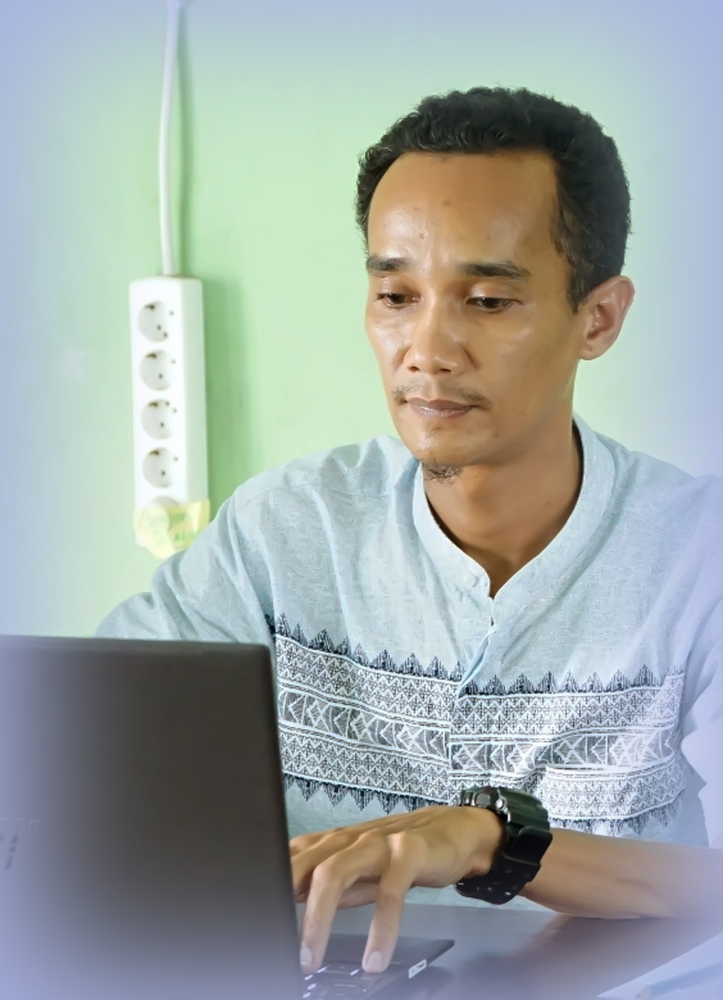
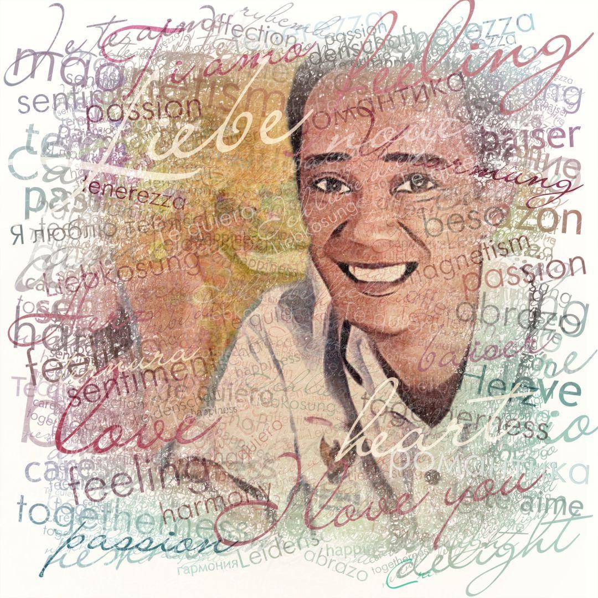
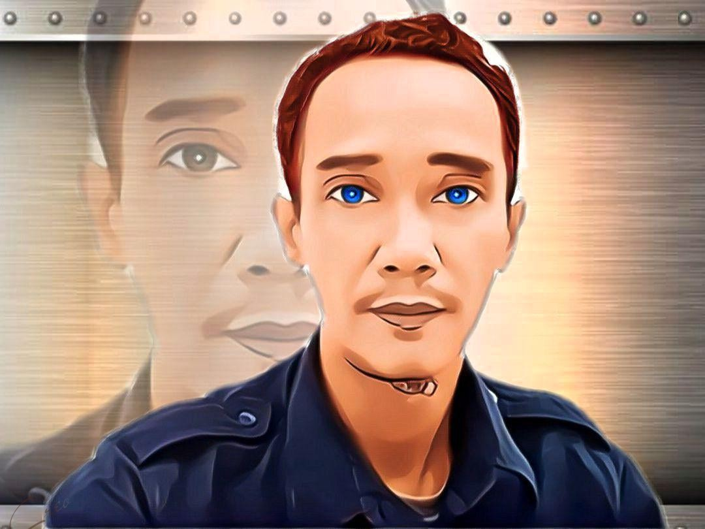
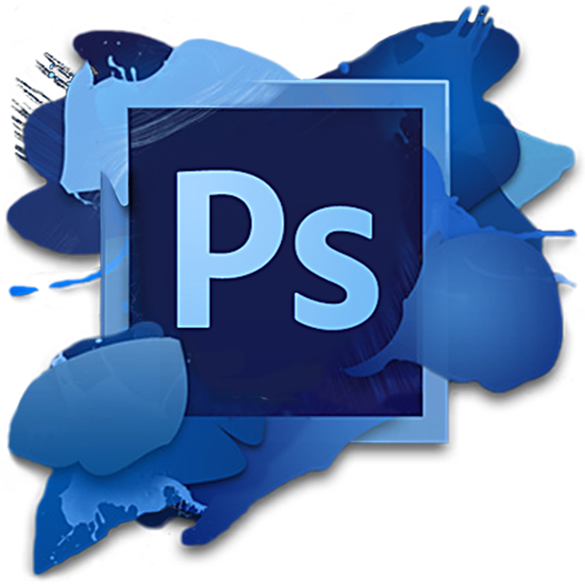
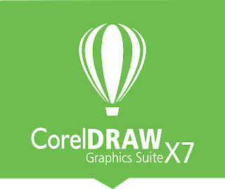

Ini Merupakan Tugas Akhir dari Pelatihan Belajar Dasar Pemrograman Web yang dilaksanakan Oleh Dicoding Academy.
Tentang Saya
About Me

Foto Rifki Alkaf
Sebagai seorang yang dikenal ramah, sopan dan murah senyum, saya memiliki komitmen tinggi terhadap pelayanan pelanggan, khususnya dalam dunia perbankan dimana saya bercita-cita memiliki karir yang cemerlang di perusahaan Anda.
–Rifki Alkaf-
Bio Data
Nama Lengkap
: Rifki Alkaf
T. Tanggal Lahir
: T. Betung, 15 Januari 1979
Jenis Kelamin
: Laki-laki
Agama
: Islam
Email
: rifkialkaf@yahoo.com
Aktifitas Media Sosial
Follow Me
PRAKATA

Dengan mengucapkan segala puji syukur ke hadirat Tuhan Yang Maha Esa yang telah melimpahkan segala rahmat, taufiq dan hidayah-Nya berupa kesehatan. Sehingga pada kesempatan yang baik ini kami dapat mnyusun autobiografi ini dengan
baik dan lancar. Biografi ini berisi masa – masa hidup dan pengalaman – pengalaman penulis yang masih diingat ketika umur 0 tahun hingga ± 15 tahun. Tujuan menulis biografi ini agar pembaca mengetahui masa lalu penulis dan
bisa pengambil sikap – sikap positif dari biografi penulis ini.
Semoga Allah SWT, memberikan pahala atas kebaikan semua pihak yang telah memberikan bantuan kepada penulis. Dalam penyusunan biografi ini masih jauh dar sempurna, maka saya mengharapkan kritik dan saran yang membangun dari pembaca
demi sempurnanya biografi ini. Apabila ada kata-kata yang kurang berkenan, saya sebagai penulis meminta maaf yang sebesar-besarnya. Terimakasih atas perhatiannya dan semoga autobiografi ini dapat berguna bagi pembaca.
HOBI

Hobiku adalah membaca. Aku sangat suka sekali membaca. Terkadang saat jam istirahat di Sekolah disaat teman-teman yang lain sibuk bermain dan bercanda dengan teman lainya, aku malah memilih perpustakaan sebagi tempat istirahatku. Namanya
saja hobi, pastinya membawa kesenangan tersendiri. Mungkin bagi sebagian temanku ini adalah rutinitas yang membosankan dan menjenuhkan, tapi buatku membaca adalah hal yang sangat mengasyikan. Kata pak guru “ Membaca adalah Jendela
Dunia”. Dengan membaca kita bisa tahu apa saja. Allah SWT saja memerintahkan Rasulullah Muhammad SAW saat pertama kali menerima wahyunya untuk membaca. Buatku membaca seperti membuat ketagihan, dikala bacaanku belum selesai rasanya
ingin terus dan terus membukanya, kadang saat bepergianpun aku selalu membawa buku kesukaanku.
Walau sudah kubaca berulangkali tapi masih tetap suka buku – buku itu. Beberapa bulan yang lalu perpustakaan di Sekolahku mendapatkan kiriman buku baru dari pemerintah, aku sangat senang sekali. Banyak sekali judul buku yang menarik.
Sayang belum semua bisa dipinjam sebab masih dalam proses pelebelan. Akan tetapi sudah ada separo kiriman buku baru sudah berjejer di rak buku perpustakaan disekolahku. Disanalah tempatku meluapkan hobiku.
SOFTWARE
Seni yang kami tuangkan pada Media Digital seperti Advertising Design, Audio Video Design, Photograph Design serta Jasa Teknisi Komputer dan Peripheral untuk Hardware dan Software menjadi pilihan kami dalam melayani kebutuhan Design
dan Komputer Maintenance Anda
Photoshop CS6

Salah satu software yang menjadi senjata para design grafis adalah Adobe Photoshop, oleh karena itu para desainer yang bergelut didunia grafis wajib memiliki software tersebut. Photoshop merupakan software editing untuk image
atau foto yang bertipe raster atau bitmap. Namun sebagai aplikasi pengedit gambar, fungsi Photoshop dapat dijabarkan lebih khusus lagi, yaitu untuk mempercantik gambar, merekayasa gambar, dan membuat desain gambar. Adobe
Photoshop, atau biasa disebut Photoshop, adalah software editor buatan Adobe Systems yang dikhususkan untuk pengeditan foto/gambar dan pembuatan efek. software ini banyak digunakan oleh fotografer digital, perusahaan iklan
dan desain grafis sehingga dianggap sebagai pemimpin pasar (market leader) untuk software pengolah gambar/foto, dan, bersama Adobe Acrobat, dianggap sebagai produk terbaik yang pernah diproduksi oleh Adobe Systems. Versi
kedelapan aplikasi ini disebut dengan nama Photoshop CS (Creative Suite), versi sembilan disebut Adobe Photoshop CS2, versi sepuluh disebut Adobe Photoshop CS3 , versi kesebelas adalah Adobe Photoshop CS4 , versi keduabelas
adalah Adobe Photoshop CS5 dan seterusnya.Photoshop bukan hanya digunakan untuk kalangan profesional, tapi juga mereka yang baru tertarik pada dunia grafis. Memulainya pun tak sulit, karena sudah banyak panduan yang bisa
kamu temukan di YouTube. Mulai dari mengganti background pada gambar atau foto, mengubah paradigma pada warna, hingga mengganti objek pada suatu foto atau gambar dengan sesuatu yang lain.
CorelDraw X3

CorelDRAW Graphics Suite X7 17.6.0.1021 HF1 Special Edition Saya rasa sobat semua sudah tahu semua fungsi dari software berbasis vektor ini. CorelDRAW Graphics Suite X7 17.4.0.887 Special 32 & 64 bit ini merupakan software
yang di buat untuk menggambar dengan jenis vektor. di versi CorelDRAW Graphics Suite X7 17.4.0.887 Special 32 & 64 bit , terdapat kata Special, dimana Special di sini adalah versi repack dan Kita tidak perlu repot aktivasi,
karena akan secara otomatis teraktivasi ( ketika install, serial number langsung muncul ).